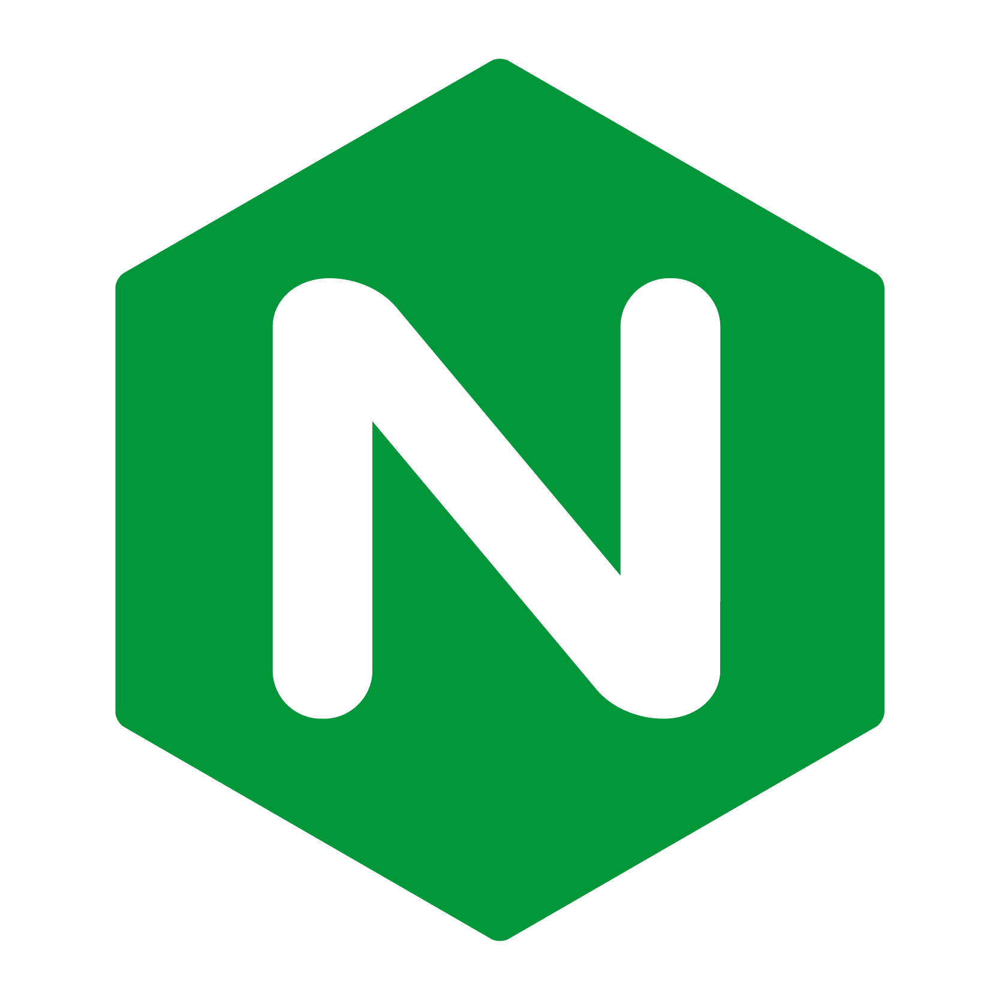

Nginx¶
{kind=link}
Última edición el día 2020-12-14 a las 23:37.
Esta es la documentación que he recopilado para instalar y configurar un servidor Nginx en Ubuntu para distintos entornos.
Índice
Instalar y configurar servidor Nginx¶
Actualizar lista de paquetes:
sudo apt updateInstalar Nginx:
sudo apt install nginx
Nota
El servidor estará funcionando en la dirección: http://localhost y vista desde su ip: http://127.0.0.1, si accedemos veremos la página de bienvenida.
Arranque y estado del servidor (systemctl)¶
Comprobar estado:
sudo systemctl status nginxArrancar:
sudo systemctl start nginxReiniciar:
sudo systemctl restart nginxDetener:
sudo systemctl stop nginx
Importante
Para evitar fallos con las urls largas editamos el archivo sudo nano /etc/nginx/nginx.conf
y descomentamos la línea #server_names_hash_bucket_size 64; borrando la almohadilla.
Crear un Server Block¶
Un Server Block o Bloque de Servidor es un archivo de configuración para un sitio o aplicación web.
Preparar el directorio del proyecto¶
Para crear un Server Block hacemos lo siguiente:
Crear un directorio (misitio):
/var/www/misitioAsignar propiedad al usuario actual:
sudo chown -R $USER:$USER /var/www/misitioAjustar permisos del directorio:
sudo chmod -R 755 /var/www/misitio
Accedemos al directorio «misitio» y creamos un archivo de prueba index.html con un mensaje escrito para probar mas adelante su funcionamiento.
Crear fichero Server block¶
Crear un archivo para configurar el servidor:
sudo nano /etc/nginx/sites-available/misitio
server {
listen 80;
listen [::]:80;
root /var/www/misitio;
index index.html index.htm;
server_name 127.0.0.1;
location / {
try_files $uri $uri/ =404;
}
}
Ahora se crea un enlace símbolico a la carpeta de sitios disponibles:
sudo ln -s /etc/nginx/sites-available/misitio /etc/nginx/sites-enabled/Y comprobamos la configuración de los Server Blocks:
sudo nginx -tReiniciamos el servidor:
sudo systemctl restart nginx
Y ya tenemos montado el servidor en http://127.0.0.0
Analizando las líneas: * Se abre un server con las llaves y dentro se asignan los puertos de escucha, que en este caso será el 80. * con root indicamos la carpeta donde se encuentra el proyecto. * con index definimos los archivos que tiene que reconocer como arranque de la aplicación. * con server_name le asignamos el dominio con el que va a trabajar. * con location asignamos una ruta en el proyecto y dentro de las llaves su comportamiento, en el caso de esta va a buscar archivos o si no encuentra enviará un error 404 de Nginx (también podemos personalizarlo).
Instalar y configurar el cortafuegos¶
Este paso es opcional pero muy recomendado, este cortafuegos nos ayudará a limitar el acceso a areas no deseadas.
Instalar el cortafuegos:
sudo apt install ufwHabilitar el cortafuegos:
sudo ufw enabley elegimos YESComprobar el estado del cortafuegos:
sudo ufw status
Trabajar con HTTPS¶
Para poder trabajar con HTTPS nos hará falta un certificado SSL, pero podemos ir configurando el cortafuegos:
* Se elimina la regla HTTP: sudo ufw delete allow 'Nginx HTTP'
* Se añade una nueva regla que lo permite todo: sudo ufw allow 'Nginx Full'
* Comprobamos el estado: sudo ufw status
Activar SSL¶
Para activar SSL se puede utilizar de forma gratuita CERBOT el cual extiende un certificado Let’s Encrypt que dura 90 días y se puede renovar.
Añadir repositorio:
sudo add-apt-repository ppa:certbot/certbotRealizar instalación:
sudo apt install python-certbot-nginxAñadir los dominios y subdominios después de cada d:
sudo certbot --nginx -d misitio.com -d www.misitio.comescogemos la opción 2 para desviar todo el tráfico hacia HTTPSPara activar o renovar el certificado:
sudo certbot renew --dry-runComprobamos que quedó bien la configuración de Nginx:
sudo nginx -tReiniciamos el servidor Nginx:
sudo systemctl restart nginx